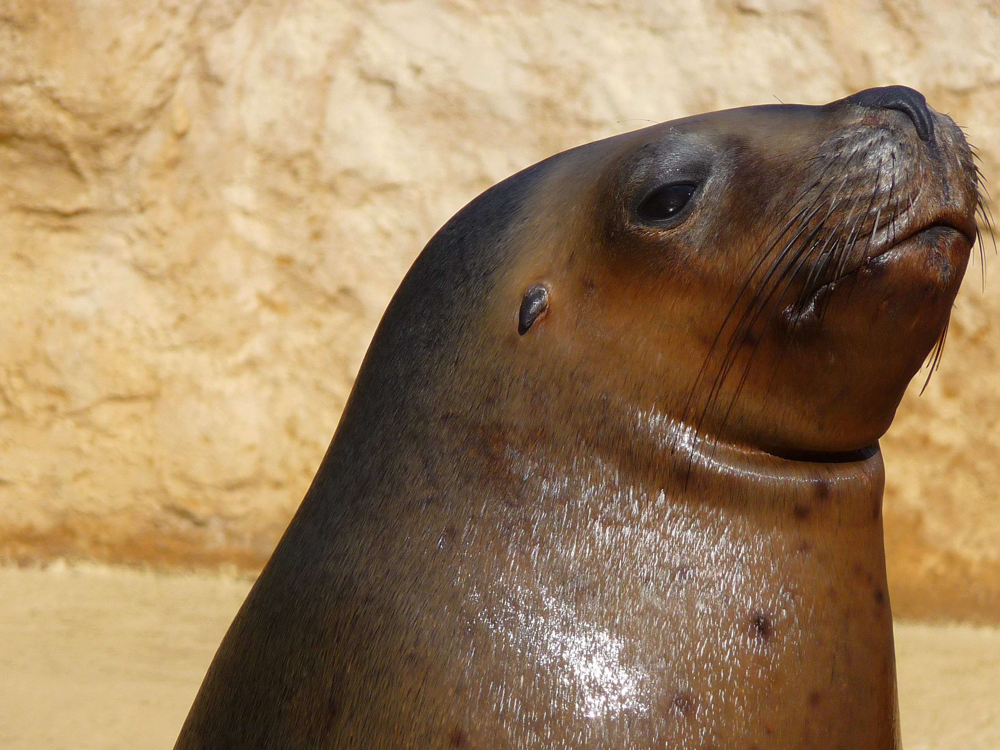
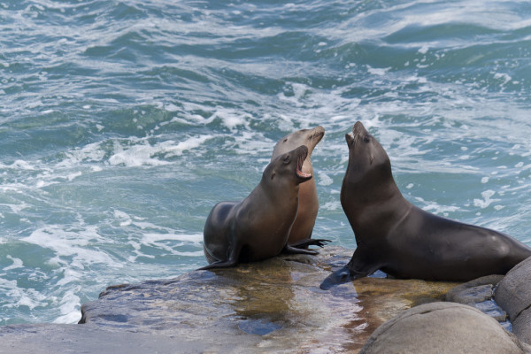

Leão marinho
da subfamília Otariinae da família OtariidaeO leão-marinho é um mamífero semiaquático, de que há várias espécies, da subfamília Otariinae da família Otariidae, que vive em regiões de baixas temperaturas e alimenta-se principalmente de peixes e de moluscos.
Os leões-marinhos já estiveram muito próximos da extinção. Entre 1917 e 1953, mais de meio milhão desses animais foram abatidos por caçadores em busca de sua gordura e de seu couro, usado sobretudo na confecção de casacos.
Com a proibição da caça, esses animais, que chegam a pesar 300 quilos e a atingir 3 metros de comprimento (fêmea 140 kg e os machos 300 kg), começaram a se recuperar.
Mesmo assim, ainda sofrem com a poluição das águas e, principalmente, com a pesca realizada com redes. Seus maiores predadores são o homem, as orcas e os tubarões.
“nos lançamos a um mar que não existe. A doçura do monstro, oclusa, à espera… Um leão-marinho brinca em nós, e é triste.”
~Carlos Drummond de Andrade
- Tipo: Mamífero Aquático
- Idade Média: 20 anos
- Macho adulto: 350kg
- Fêmea adulta: 110kg
- Família: Otariidae
O leão-marinho é um mamífero semiaquático, de que há várias espécies, da subfamília Otariinae da família Otariidae, que vive em regiões de baixas temperaturas e alimenta-se principalmente de peixes e de moluscos
O leão-marinho é um mamífero semiaquático, de que há várias espécies, da subfamília Otariinae da família Otariidae, que vive em regiões de baixas temperaturas e alimenta-se principalmente de peixes e de moluscos